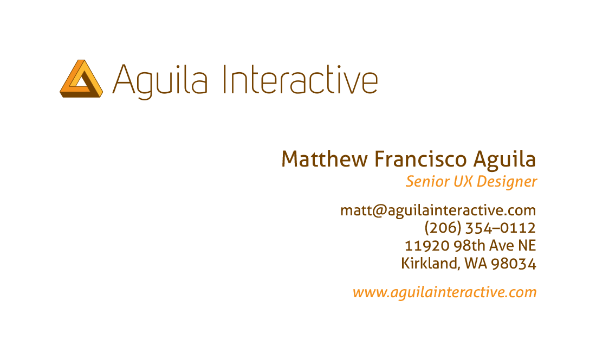

Aguila Interactive was a freelance full service design endeavor of my own making. The above details some of my identity design process, final stationary and website design. I showcased previous web and print design as well as some of my personal photography. The hand coded website is linked to the right.
View Site 